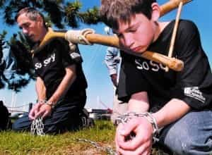

The international community has taken a serious approach to “children’s liberation,” now enshrined in the United Nations Convention on the Rights of the Child. Only a handful of tiny countries aren’t yet signatories. Bill Clinton signed the UNCRC, but the Senate never officially ratified it. This is for the better, as we’ll see.
Advocates portray its non-ratification as some kind of profound embarrassment. Until fairly recently, the only other major holdouts were Somalia (a government which barely exists) and South Sudan (a newly seceded country and not in the greatest shape). That’s hardly a flattering group in which to be included, and now the USA appears even less “progressive” than them.
The devil’s in the details
No, Hillary, it takes a family to raise a child.
Many provisions are decent and sensible, which civilized nations already had long ago. However, some others are debatable. Even when the road to progress is paved with good intentions, problems can happen when vague and open-ended statements attain the force of law. This enables heavy-handed control and micromanagement.
Dictating agendas through international law is an increasing trend; the UNCRC could be the next legal frontier. The treaty is sort of considered a “living document”, and you know what that means. The following are some questionable items.
3.1: In all actions concerning children, whether undertaken by public or private social welfare institutions, courts of law, administrative authorities or legislative bodies, the best interests of the child shall be a primary consideration.
Who gets to determine “best interests“, and by what standard? The next two lines provide more information, but all told, it’s missing key details. Clearly there’s a compelling interest in cases of abuse or neglect, which laws already address. However, outside of that, the door is still wide open to bureaucrats empowered to override parental authority and judgment.
13.1: The child shall have the right to freedom of expression; this right shall include freedom to seek, receive and impart information and ideas of all kinds, regardless of frontiers, either orally, in writing or in print, in the form of art, or through any other media of the child’s choice.
This is pretty open-ended. Mouthing off to authority figures without consequences could be considered a human right.
14.1: States Parties shall respect the right of the child to freedom of thought, conscience and religion.
Although I can sympathize with kids who don’t want to be dragged to church every Sunday, this provision is too expansive. It also means that a child can join a cult, and the parents have no say in the matter.
15.1: States Parties recognize the rights of the child to freedom of association and to freedom of peaceful assembly.
Parents would lose control over who their kids associate with, other than (per 15.2) forbidding contact with known criminals.
16.1: No child shall be subjected to arbitrary or unlawful interference with his or her privacy, family, home or correspondence, nor to unlawful attacks on his or her honour and reputation.
16.2: The child has the right to the protection of the law against such interference or attacks.
No need to hide the bong any more.
28.1.2: Encourage the development of different forms of secondary education, including general and vocational education, make them available and accessible to every child, and take appropriate measures such as the introduction of free education and offering financial assistance in case of need;
This makes free college a right. The UN presumably gets to determine who qualifies, and taxpayers will pick up the huge tab.
28.2: States Parties shall take all appropriate measures to ensure that school discipline is administered in a manner consistent with the child’s human dignity and in conformity with the present Convention.
My eight year old self is cackling with glee at that one. “Kid-lib” is great!
31.1: States Parties recognize the right of the child to rest and leisure, to engage in play and recreational activities appropriate to the age of the child and to participate freely in cultural life and the arts.
Again, it’s too open-ended. Is ten hours a day of video games a human right? The UN gets to decide that one.
37.1: No child shall be subjected to torture or other cruel, inhuman or degrading treatment or punishment. Neither capital punishment nor life imprisonment without possibility of release shall be imposed for offences committed by persons below eighteen years of age;
This sounds good at first glance. However, this would’ve meant that Dylan and Klebold (had they survived) would’ve walked eventually.
Some positive changes we’ll never get

This kind of brainwashing could be made illegal, but don’t count on it.
Potentially, some of the provisions could be improvements over the status quo.
6.1: States Parties recognize that every child has the inherent right to life.
The treaty defines a child as anyone under 18, though there’s no lower limit, so a baby exists from conception. Feminists who’ve fought tooth and nail for partial birth abortion won’t like this!
7.1: The child shall be registered immediately after birth and shall have the right from birth to a name, the right to acquire a nationality and, as far as possible, the right to know and be cared for by his or her parents.
So after a frivolous divorce, a mother couldn’t deprive the father of contact with their children. However, article 9 basically contradicts this, leaving things up to judges and bureaucrats. Then article 10 waters down article 9. However, article 18 bolsters article 7. Confused yet?
17: States Parties recognize the important function performed by the mass media and shall ensure that the child has access to information and material from a diversity of national and international sources, especially those aimed at the promotion of his or her social, spiritual and moral well-being and physical and mental health.
Looking at it one way, this would forbid censorware blocking controversial political content to “protect children”. Online censorship is bad enough already.
29.1.3: [States Parties agree that the education of the child shall be directed to…] The development of respect for the child’s parents, his or her own cultural identity, language and values, for the national values of the country in which the child is living, the country from which he or she may originate, and for civilizations different from his or her own;
This effectively prohibits forms of cultural Marxism meant to drive a wedge between the generations, make young people ashamed of their own countries, indoctrinate kids with White guilt, or turn them away from their society’s traditional morals. Everyone would be allowed pride in their heritage.
Unfortunately, all this is too sensible to be implemented this way. Selective enforcement at the will of the governing body is generally how it goes for “living documents”.
It gets worse yet
Future UN kiddie “inspector”?
Despite good intentions, the UNCRC has a basic underlying assumption that kids are just little adults. By definition, children are immature. By adult standards, teenagers act neurotic, and younger kids are completely clueless. This is why they need guidance by responsible parents and teachers. This shouldn’t be abrogated, even potentially, without compelling circumstances.
Putting the UN’s bunglers—our wannabe world government— in charge of children’s welfare defies the subsidiarity principle. If a family fails in its primary function of raising children, it’s the state government’s responsibility to intervene, not international bureaucrats unaccountable to the public. Keep in mind also that if the USA ratifies the treaty, it becomes the law of the land, superseding national and state law. Further, treaties can’t get repealed if it turns out they’re not serving the public’s interests.
Finally, the UN is notoriously corrupt. As protectors of human rights, they’ve become a sad joke. Is the treaty helping kids in hellhole countries that ratified the UNCRC? For a few other items, UN deployments often fail to protect embattled populations. They brought cholera to Haiti; that country didn’t need more problems. The worst is the UN’s frequent sex crimes. This is why we don’t need incompetent, scandal-plagued UN cookie-pushers implementing “kid-lib”.
Read More: The End Goal Of Western Progressivism Is Depopulation